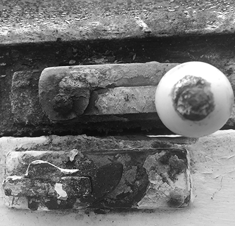
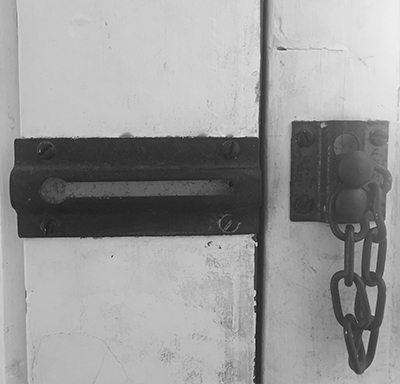
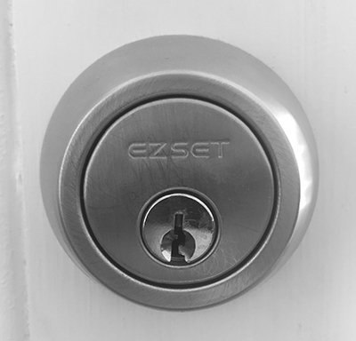
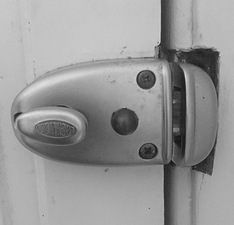
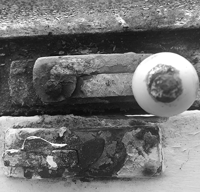
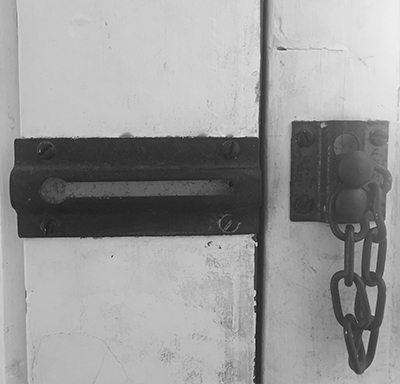
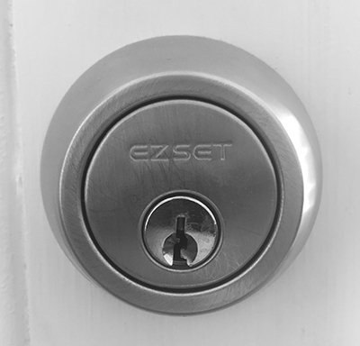
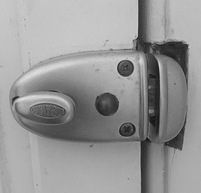
top-link
THE INTERNET
Locks are more commonly related to the internet as they offer a sense of security. From initially using handles provided to search content, locks present the ability of keeping sites closed off to unintended users. This is particularly common for individuals connected to local servers who are accessing the internet under a governing body who are able to control search behaviour.
These locks also offer the ability to be time sensitive, resulting in access being denied between particular hours, similar to office buildings in the physical.
For more on locks and the internet: Visit here.
images-link
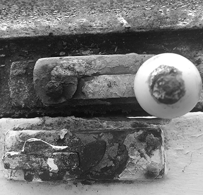
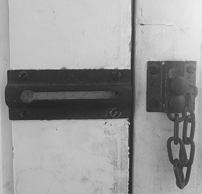
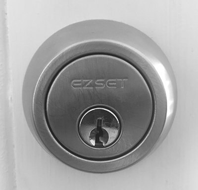
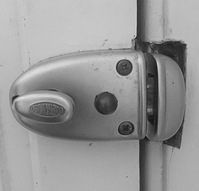